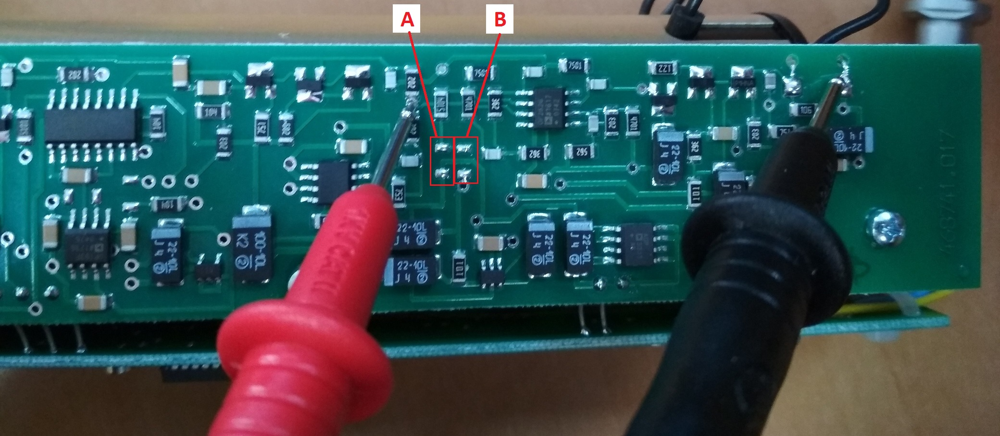
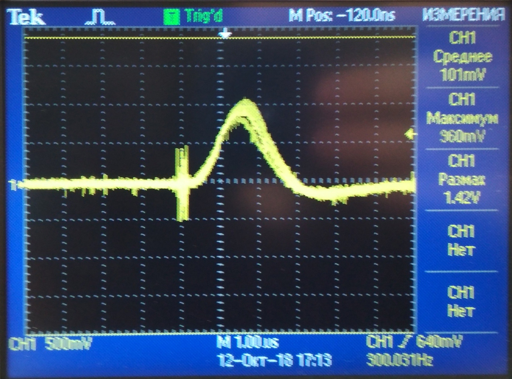
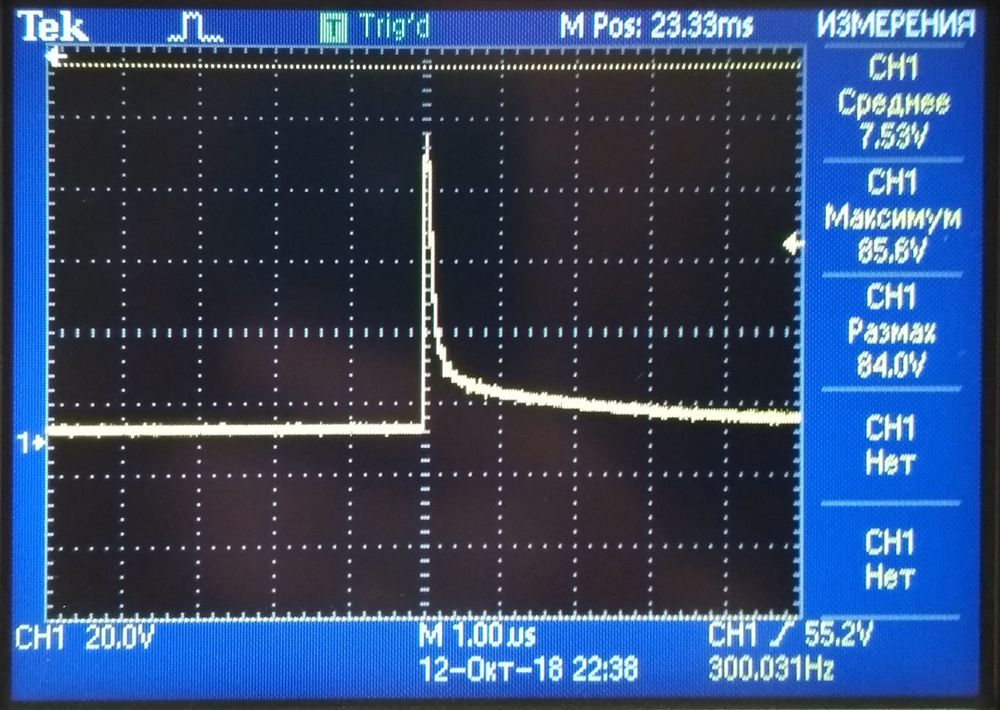

БДПБ-01
- Получить блоки детектирования, присвоить номера. НОМЕРА НЕ КЛЕИТЬ НА КОРПУС!
В перечень записать дату, количество блоков отданных в настройку и ФИО регулировщика.
- Подключить БД к ПК.
- Вольтметром на пределе измерения 200мВ, проверить напряжение смещения на плате усилителя D4.7 = -4...-5
мВ. Если напряженин ниже -5мВ (например -8), запаять нулевой резистор на контактные площадки [В]
(или с сопротивленеием, если нужен меньше шаг). Если выше -4 мВ, запаять на контактные площадки [A]

- Проверить реперный сигнал светодиода на плате усилителя D4.7.
- Вид сигнала на осциллографе:

- Запустить программу Calibration AB. Записать в память внутренний номер.
- Установить на блок источник бета-излучения Sr90. На печатной плате преобразователя,
регулировкой резистора R11*, настроить пик спектра на 40 канал.
- Снять источник бета-излучения с БД.
- Проверить напряжение на построечном резисторе R9.
- Проверить напряжение на выходе D4.6 (д.б. до 4,5 В)
- Проконтролировать напряжение (до 90 В) и форму пробоя светодиода.

- Измерить напряжения Uвыс.
- Проверить ток потребления ≈ 20мА по U на R1 плата устройста обработки д.б. 13-14 мВ.
- Записать в паспорт настройки БД.
- Приработать БД.
- После приработки перепроверить канал бета-излучения Sr90.
- Отдать на сборку.
- Отдать в калибровку на плоских источниках.